FIN
The story continues in the next album.
18CAKE
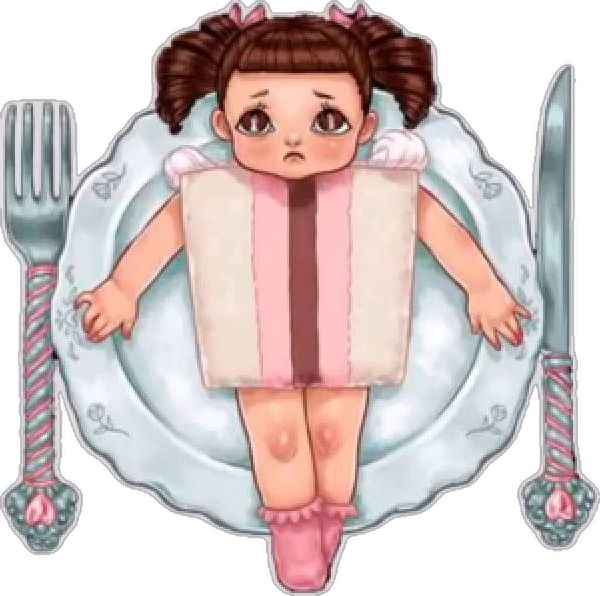
TEDDY BEAR
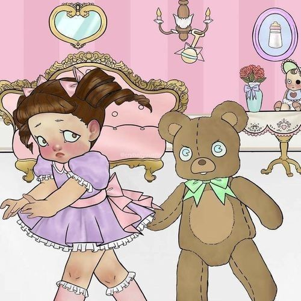
PLAY DATE

MAD HATTER
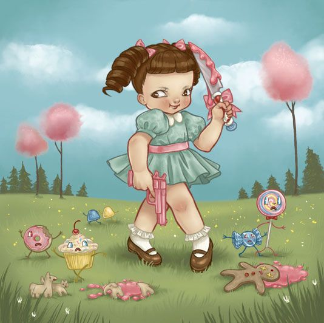
Cry baby sat and disagreed Imperfect, insane, and emotional was she But she feels safe, going to sleep And there's no one else That She'd rather be
MRS. POTATO HEAD
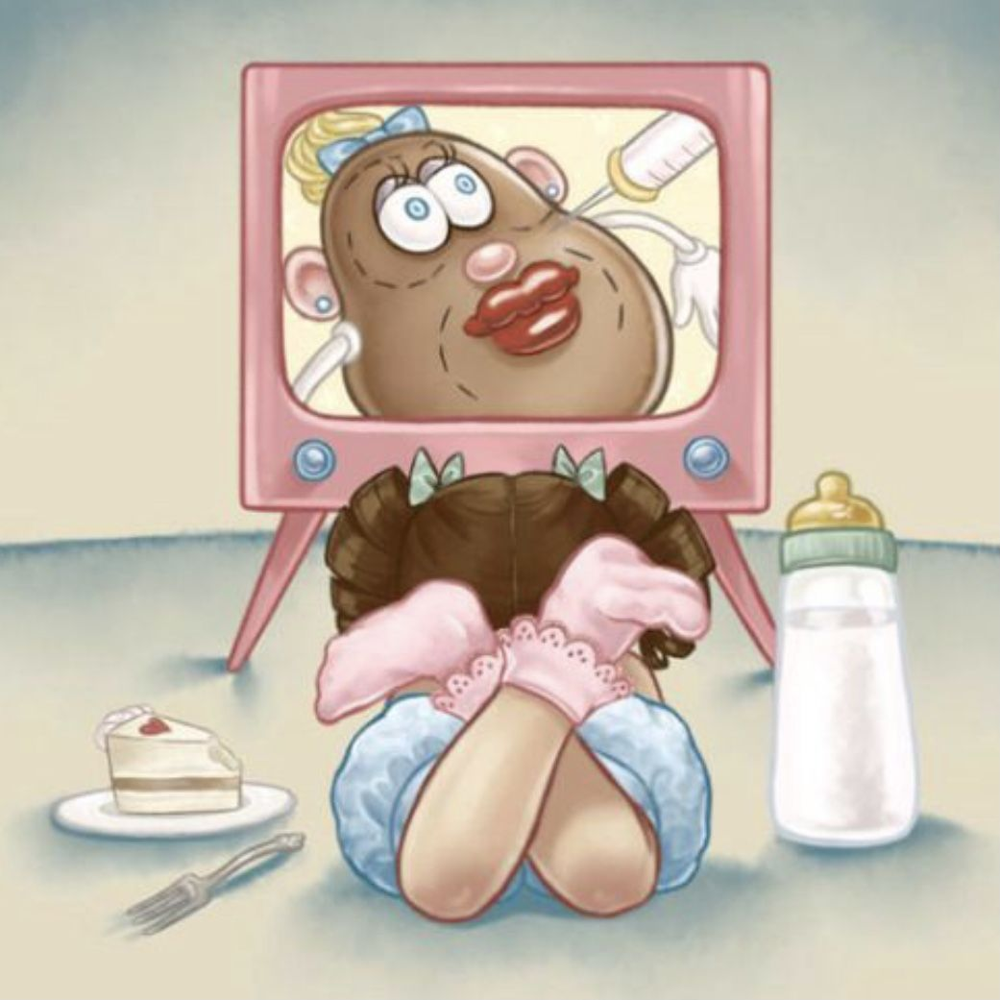
One day she turned on the tv Mrs. potato on the screen Showing off her surgeries She thought that her pain ment beauty
PACIFY HER
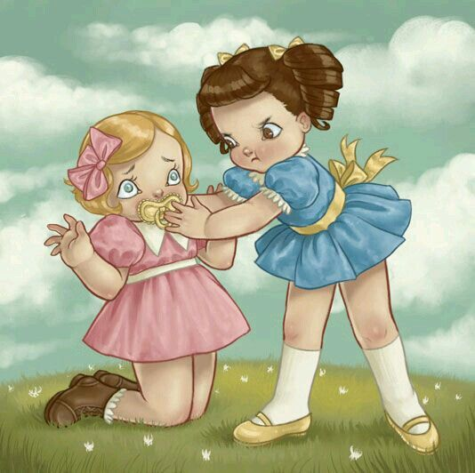
She escaped and was never the same She swayed a boy who had been claimed And pacified ol' what's her name Not out of love, just played a game
MILK AND COOKIES
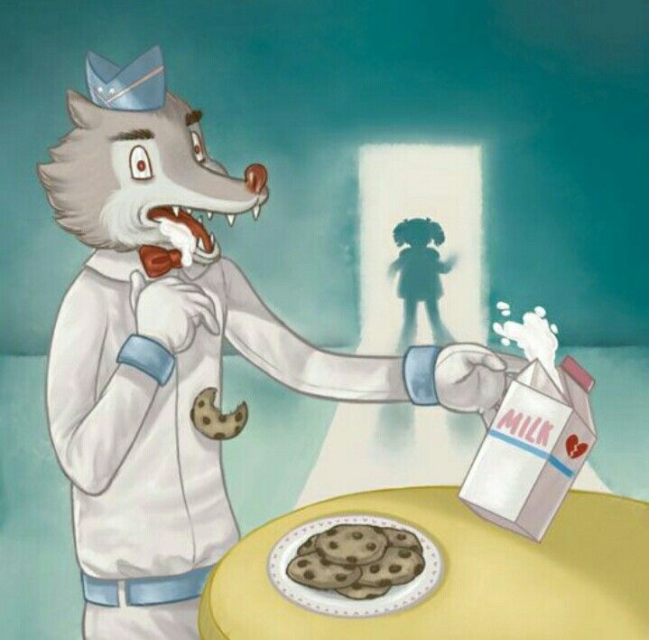
She got locked up and made a plan To kill the bad wolf ice-cream man He ordered her to make him snacks Her cookies and milk make him colapse
TAG YOU'RE IT
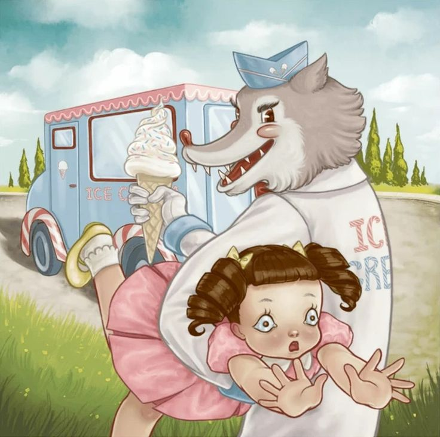
A lonely girl so vulnerable To her house she walks alone The bad wolf ice-cream man had known And took her to his awful home
PITY PARTY
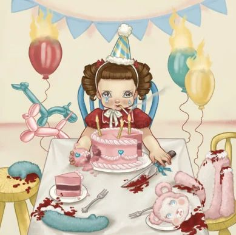
Her birthay was around the bend She invited him and all her friends None of wich did attend Her happiness came to an end
TRAINING WHEELS
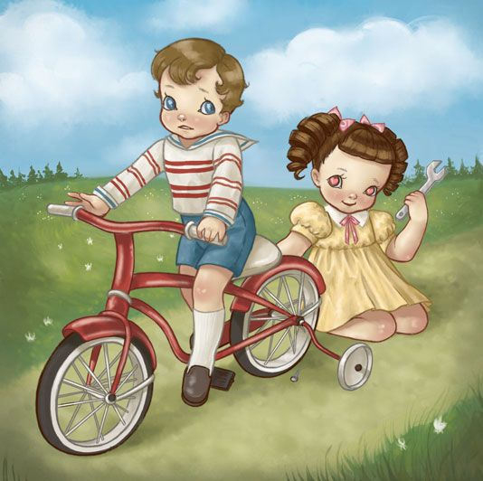
They rode their bikes so very slow She wanted more as they got close Unscrewed his training wheels to grow Into a two wheel bicicle
SOAP
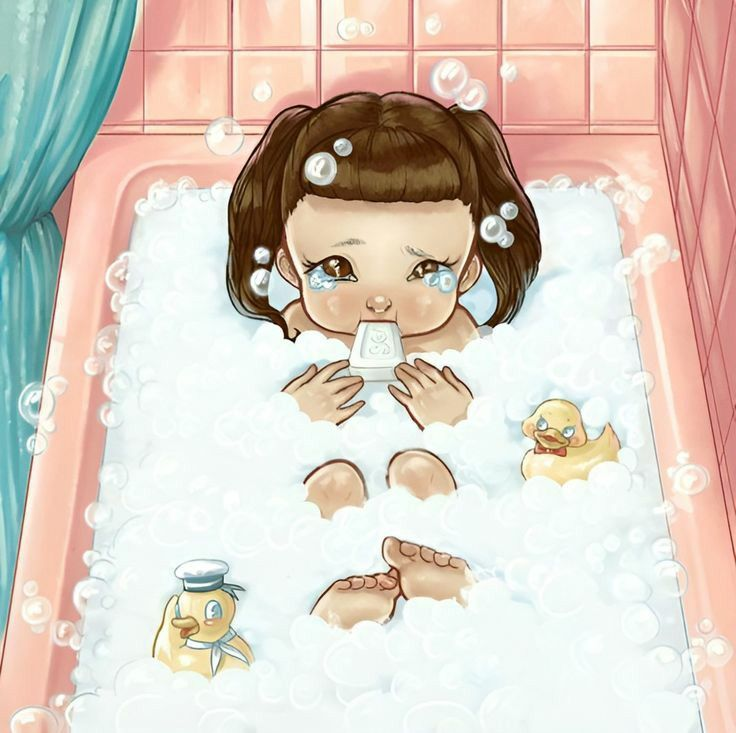
She met a new boy and filled with hope She said too much and always choked So she whased her mouth out with soap So that he wouldn't pull the rope
ALPHABET BOY
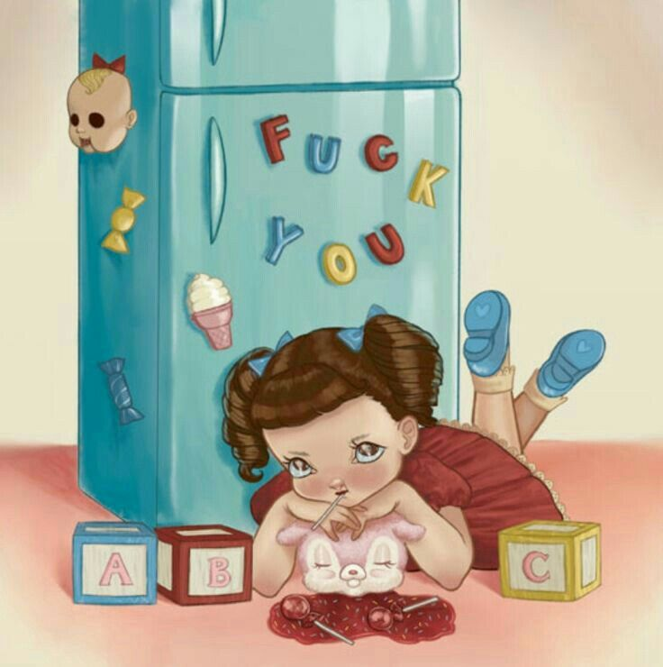
She cried Until see That he wasn't even worthy Of all her love and abc's So she spelt fuck you in 1 2 3
CAROUSEL
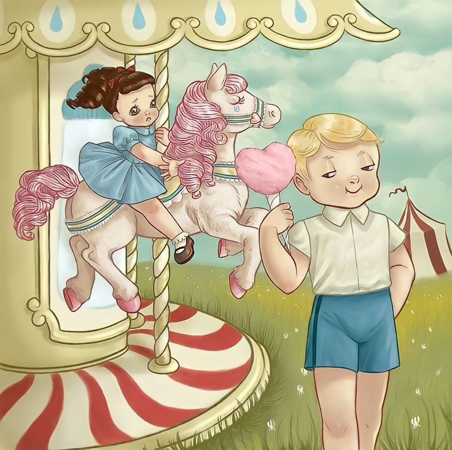
The carnival is where she fell For the first time on the carousel Round and round the same hell She never gets under his shell
SIPPY CUP
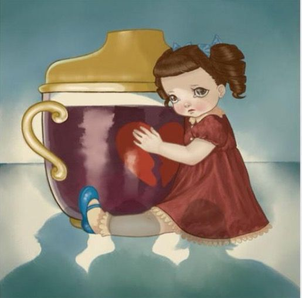
She watches momma sip a drink Out of a sippy cup that's pink Because of that you'd never think That she'd pass out under the sink
DOLLHOUSE
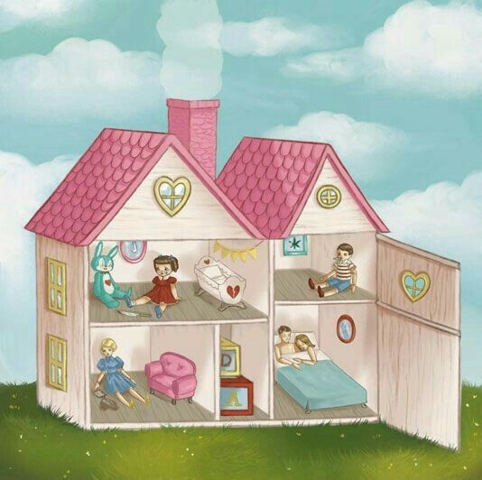
And in her picture perfect home Momma's drunk while daddy moans Her brother always comes home stoned She watches in her room alone
CRY BABY
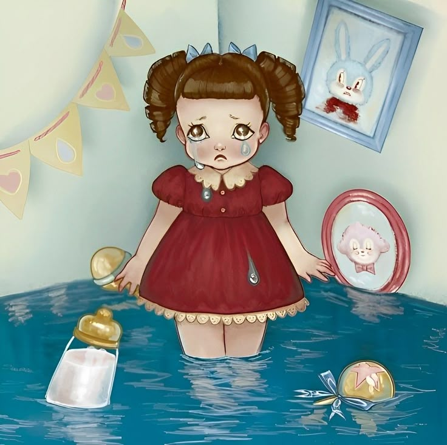
Saddest girl she has to be
Salty tears stream down her cheek
Her heart's bigger than her body
Her name is cry baby
INDEX
- 1. Cry Baby
- 2. Dollhouse
- 3. Sippy Cup
- 4. Carousel
- 5. Alphabet Boy
- 6. Soap
- 7. Training Wheels
- 8. Pity Party
- 9. Tag You're It
- 10. Milk & Cookies
- 11. Pacify Her
- 12. Mrs. Potato Head
- 13. Mad Hatter
- 14. Play Date
- 15. Teddy Bear
- 16. Cake

Cry Baby
The Story Book